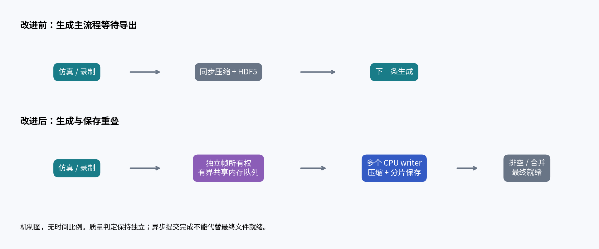
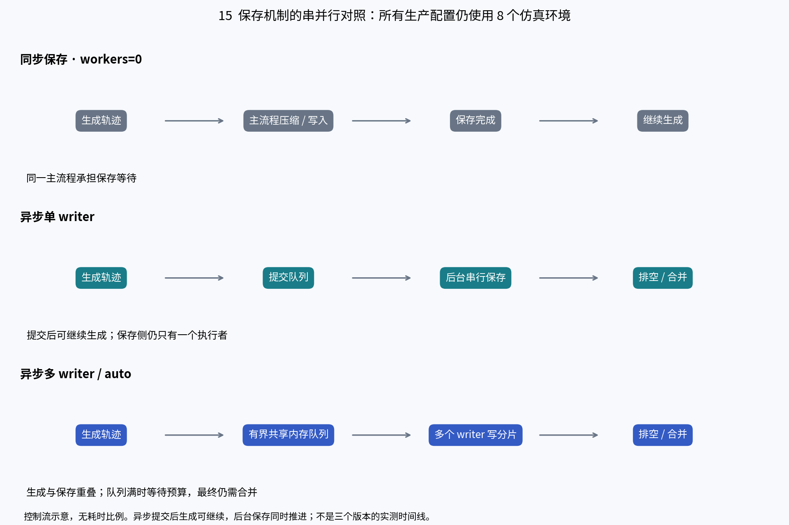
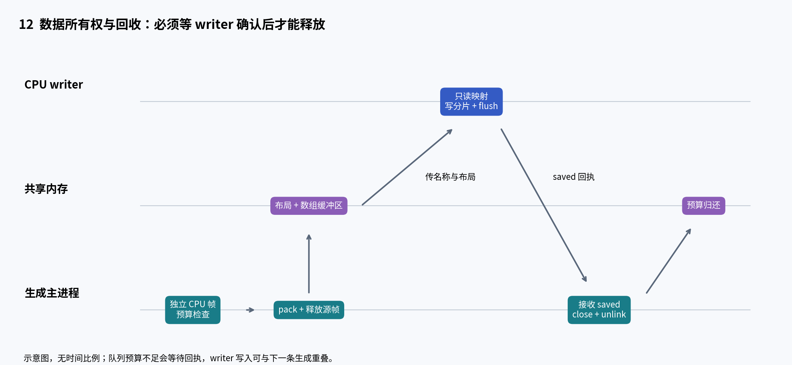
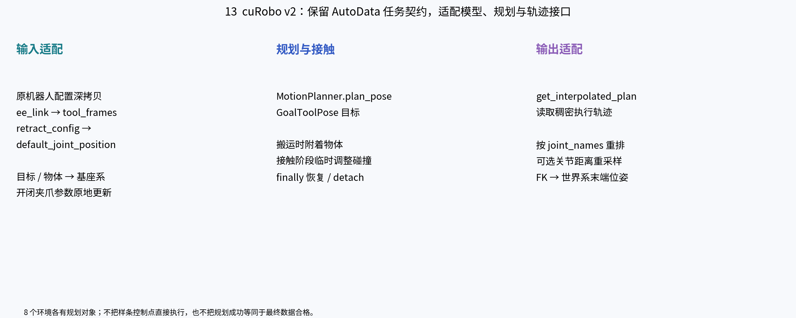
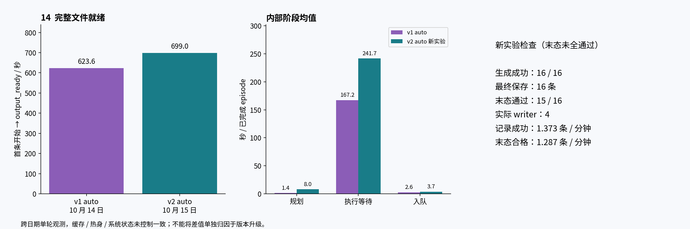
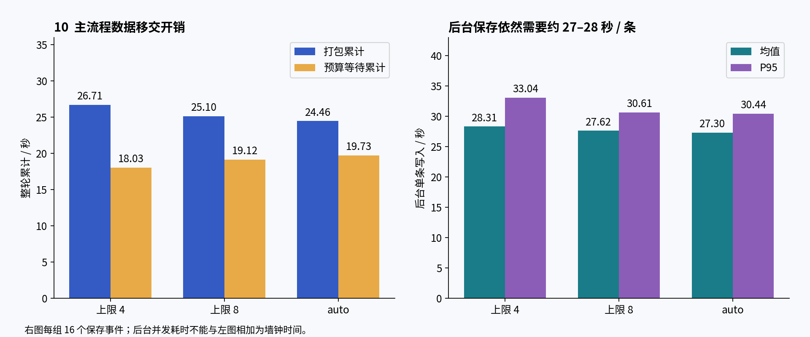
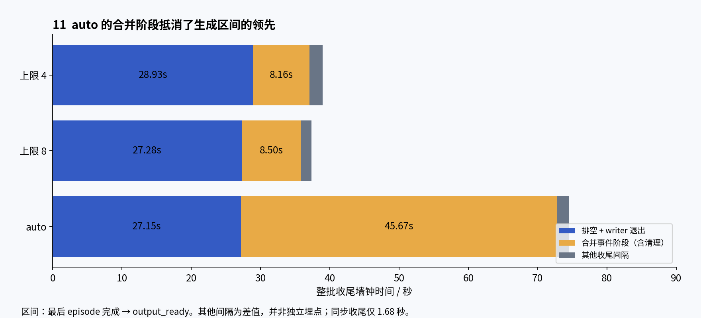
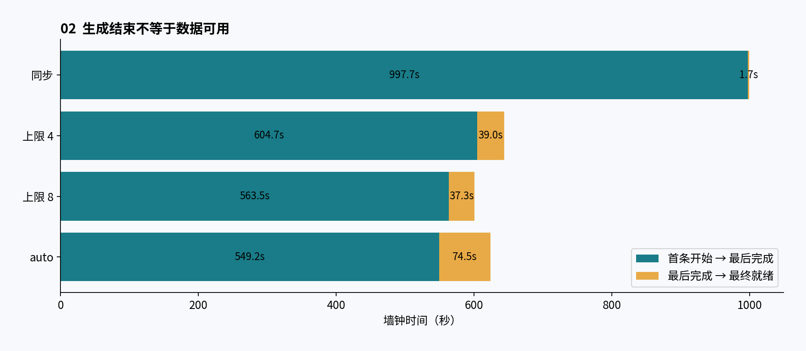
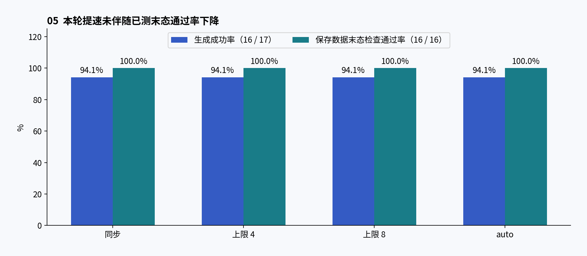
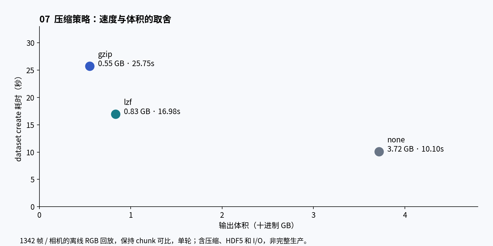

展开章节目录
- 先看代码区别：三种保存方式，共用同一生成任务
- 串行与并行版本的变化原理
- 实现细节：从 episode 内存到最终 HDF5
- cuRobo v2 的实现适配：不是只换一个版本号
- cuRobo v2 已补跑：生产完成，严格末态验收 15/16
- 内部耗时变化：按三种计时范围分别看
- 结论：异步保存已经带来收益，v2 已补齐一次完整运行
- 改了什么：把保存从生成主流程中拆出
- 为什么提速：主流程等待减少，而不是规划器突然更快
- 统一口径：最终文件可用，才算生产完成
- 资源利用率：有所提高，但“GPU 跑满”不是验收条件
- 质量效果：本轮指标没有下降，但不代表全面质量认证
- 早期测试：收益方向一致，不能拼成连续加速曲线
- 尚未落地的压缩改动与旧 v2 中断记录
- 下一步如何把结论变成稳定生产配置
- 证据与复现
AutoData 生产效率改进复盘
材料截止：2026-10-15（北京时间）。分析对象：2026-10-14 保存的 OpenArm 左臂 AutoData 测试记录。历史 v1 数据复核 JSON、CSV 与遥测；v003 新增 v2 GPU 重跑及最终 HDF5 读回，本版补充串并行原理讲解，详见新实验章节。
先看代码区别：三种保存方式，共用同一生成任务
本节依据本轮测试目录中冻结的 launcher 源码，而非后来可能变动的工作区代码。示意代码经过简化，用于解释控制流；不是可直接执行的补丁。cuRobo v1 的同步、上限 4、上限 8、auto 共用任务与规划后端，差别集中在导出路径与 writer 扩容策略。
 三种方法的代码分支
三种方法的代码分支异步模式共有的四项代码调整如下，固定上限和 auto 都使用它们：
1. CPU 帧按环境独立持有。 async_export.py:37–60 将 CPU batch 的切片改为每个环境独立 clone，避免保留整批其他环境数据；GPU 分支仍保留原有批量 clone。它解决内存生命周期问题，不是“零拷贝”。
2. 数据移交改为有界共享内存。 Bridge.export 调用 pool.submit(..., release_source=True)；submit 先等待预算，再 pack，共享内存仅传名字和布局给 writer，复制后释放源数据。队列背压仍可能阻塞主流程。
3. 保存转入 CPU 子进程。 writer 写各自分片，回执确认后回收共享内存；HDF5 句柄和仿真对象不跨进程传递。并发改变调度位置，没有消除压缩计算。
4. 增加完成屏障和合并校验。 finish 等待全部 pending 清空、等待 writer 退出，_merge 复制各分片到临时 HDF5、检查属性/shape/dtype/压缩方式，再发布最终文件。output_ready 在后续 env.close 后发出，所以收尾区间略大于 drain+merge。

数据所有权和保存重叠示意这些优化没有在本组中改用 lzf、降低图像分辨率或取消质量检查。auto 额外优化的是资源准入，而不是新增一种压缩算法。内存修复、异步保存与分片合并没有分别做消融测试，不能把整批提速精确拆成每一项改动的独立贡献。
串行与并行版本的变化原理
这里的“串行”和“并行”主要指数据保存方式。此前各组都使用 8 个仿真环境，同步保存基线也有环境并行，不能称为整个系统完全串行。需要区分三个层次：
各版本究竟改变了什么

同步、异步单进程和异步多进程的机制对照加速来自哪里：把相加的工作变成重叠的工作
在理想化的单生产者、单保存阶段模型中，若生成一条需 G、保存一条需 W，同步模式处理 N 条约需 N×(G+W)；异步单 writer 的流水线约需 G+W+(N−1)×max(G,W)。这说明单 writer 也能通过重叠提高完整生产吞吐，但保存侧本身没有变快。
多个 writer 在独立资源充足时可以进一步提高保存侧容量；实际收益还受进程调度、数据打包、内存预算、磁盘吞吐和末尾排空约束。上述公式用于解释机制，不是本次 8 环境系统的拟合公式；不能把并行 episode 的阶段累计值直接代入推算实测墙钟时间。
为什么异步单 writer 不一定让文件更早就绪
离线保存同样 4 条数据时，同步最终就绪为 105.13 秒，异步单 writer 为 105.45 秒，异步双 writer 为 56.66 秒。单 writer 让提交更早返回，但保存工作仍由一个进程串行完成；双 writer 才增加了保存侧并行处理能力。离线实验没有持续生成可供重叠，不能直接作为完整 GPU 生产的加速比。
完整生产中，变化集中在主流程等待
前两行统计每组 17 个已完成 episode，包含 1 次失败；第三行异步配置统计 16 个保存事件；最后一行是整批墙钟时间。这些指标范围不同，不能直接相加。
后台写一条仍需约 27–28 秒，并未变成 2.6 秒。2.6 秒是主流程移交数据的平均负担。保存移到后台后与生成重叠，整批记录成功吞吐相对同步提升约 55%–66%。
“上限 4”和“上限 8”本轮实际都只启动了 4 个 writer，所以不能把它们的差值解释为 8 个保存进程相对 4 个的收益；单轮也不足以确定稳定排名。
为什么增加并行度不会一直加速
多个保存进程会竞争 CPU、内存带宽和磁盘；共享内存队列有字节预算，保存跟不上时仍会触发背压；最后还需等待分片完成并合并。仿真、渲染、规划和调度也可能成为新的瓶颈。
本轮 auto 的生成区间比“上限 8”快约 14 秒，但收尾多约 37 秒，最终晚约 23 秒交付。应优先比较最终合格数据的交付吞吐，GPU 利用率和主流程生成速度只作为辅助指标。
cuRobo v2 是独立的比较维度
10 月 15 日 v2 auto 补跑最终就绪为 699.05 秒、记录成功吞吐 1.373 条/分钟、末态通过 15/16；旧 v1 auto 为 623.65 秒、末态通过 16/16。两次跨日期、缓存状态不同，目前只能作为观测对照，不能证明 v2 升级造成提速或减速，也不能把异步保存收益归到规划器版本升级。
实现细节：从 episode 内存到最终 HDF5
1. 一份数据在谁手里，何时可以释放
录制阶段的 RGB 已在 CPU，少量状态字段仍可能在 GPU。owned_recording_method 让 CPU 帧按环境 clone，避免一个切片保留其他环境的整批缓冲区；它并没有消除复制。GPU 仍用原来的批量 clone 语义。
layout 遍历嵌套数据，记录每个叶子的路径、shape、dtype、offset、bytes；pack 在共享内存中按布局创建 NumPy view。CPU 帧逐帧复制，开启 release_source=True 时释放已复制的源帧，每累计释放约 64 MiB 尝试归还分配器空闲内存。小型 GPU 状态列表先 torch.stack 再一次转 CPU，减少逐帧设备同步。这里的 64 MiB 是尝试 trim 的触发量，不是保证 RSS 立即下降的配额。
writer 只接收共享内存名称与布局元数据，重新构造只读 NumPy view，不接收 CUDA tensor、Isaac Sim 对象或跨进程 HDF5 句柄。writer 完成写入并 flush 后发出 saved 回执；父进程收到回执才 close + unlink 共享内存，并减少 used 预算。这个顺序防止 writer 读取未完成时内存被提前释放。

数据所有权与回执回收2. 队列背压控制的是字节，不是 episode 数
提交前要求单条数据不超过队列预算；当 used + size > limit 时，主进程反复 poll(wait=.05)，接收已完成回执释放预算。随后还检查 /dev/shm 可用量，再分配共享内存并打包。它是有界队列，但背压仍会暂停主流程，所以异步入队的 P95 高于典型入队耗时。
本组请求预算 16 GiB。每条同时包含三路 640×480 RGB，不能把“8 个环境”理解成可以无代价地同时保留 8 条完整轨迹。实际占用取决于长度、源帧是否释放、已提交且尚未确认的数据、writer 私有内存与仿真器本身。
3. writer 如何扩容，为什么上限 8 只开了 4 个
固定模式按 min(待完成任务数, 上限) 扩容；这里的待完成包含排队、正在写入和进程启动阶段的任务。打包完成后会先 poll 一次，优先复用已有空闲 writer，再决定是否启动新进程。因此 writer 数由任务到达节奏与保存速度共同决定，配置上限不等于实际并行度。
auto 至少每隔 1 秒重新采样并最多新增 1 个 writer。CPU 容量同时考虑亲和性与 cgroup quota；保留 CPU 核心数为 min(2, 容量×25%)，内存保留量为 max(256 MiB, 容量×15%)，还检查进程槽位、共享内存余量、输出磁盘余量和 I/O pressure。I/O pressure 的 avg10 达到 20% 时拒绝扩容；磁盘余量必须至少容纳一条数据加 1 GiB。资源读取失败也拒绝扩容。
这些检查发生在新增 worker 的准入点，不是持续调整仿真环境数，不会主动缩容，也不是 GPU 利用率控制器。参数是当前冻结代码的规则，不保证在其他机器上最优。
4. 为什么写分片，为什么最终还要等待
每个 writer 按 route 维护自己的分片 HDF5，使用 gzip level 2，chunk 由 h5py 自动选择。单条先写 _pending_<id>，叶子和属性全部完成后移到 /data/demo_<id>，更新帧数并 flush，再回复 saved。独立分片避免多个进程同时写同一个 HDF5 文件。
finish 等待所有回执、发送退出哨兵并 join writer。_merge 按 demo_id 排序，将每条复制到 .partial.hdf5，核对属性、空组、shape、dtype、压缩设置和 episode 数；完成后用拒绝覆盖的硬链接发布最终路径，再移除临时链接。它避免未完成文件提前出现在最终路径，但不等于每个字节都经过独立读回，也不等于 fsync 持久化承诺。
output_ready 在后续 env.close 后记录。因此最终耗时包括生成、排空、合并及关闭等收尾，而 export_saved 只表示分片已写。此次旧 v2 实验正缺少这个最终完成链。
5. 出错时如何处理
writer 发送 failed、意外退出或单条超时会使父流程报错；abort 终止本任务的 writer，回收仍持有的共享内存并将 manifest 记为 failed。分片可能留存便于检查，但当前代码没有自动恢复所有中断状态的通用机制。仅凭 manifest 里的 saved 计数，不能认定对应磁盘文件现在仍存在。
cuRobo v2 的实现适配：不是只换一个版本号

v2 的数据与接口适配该适配器按 env_id 为各环境构造规划对象；代码中的单环境规划调用不等于跨 8 个环境的一次批量规划。8 环境并行仿真与规划器批处理是不同层次，不能仅凭 num_envs 推断 GPU 求解并行度。
另外，v2 的 solver iteration 埋点在旧遥测中不可用。监控行显示“求解 0 次”时，应同时检查 planner_requests、planner_request_success_rate 和 solver_iteration_instrumentation_available；0 不能解释为没有调用规划器。报告将规划请求与内部求解迭代分开，缺失的迭代统计不参与 v1/v2 比较。
cuRobo v2 已补跑：生产完成，严格末态验收 15/16
旧实验的 4 个分片已不在 manifest 指向的位置，无法直接恢复。本次使用保留的 v2 环境、冻结 launcher、同一源 HDF5 和 seed 101 任务配置，在新的本地目录重跑 8 环境、16 条成功目标。没有改上游代码、质量阈值、图像分辨率或压缩算法。
新实验记录了 output_ready，进程正常退出，最终文件存在且可读：生成成功 16/16，保存 16 条，末态检查通过 15/16。校验使用与历史测试相同的 validate_output.py，覆盖动作维度/有限性、图像形状与首尾读取、末态放置/速度检查并计算整个文件 SHA-256。它不是逐帧物理重放，也不是完整图像质量认证。
质量检查整体未通过。 未通过项为 demo_2：物体在目标区域内，高度误差约 0.23 mm，线速度 0.0221 m/s 低于阈值 0.03 m/s，但角速度 0.8538 rad/s 超过 0.5 rad/s 的原阈值。校验器返回码为 1；原生结构检查返回码为 0。没有修改阈值或删除该条数据。应先分析结束判据与稳定等待，再决定是否需要增加静止窗口并另开实验，不能用本轮声称 16 条全部合格。
按已测末态合格条数计算，吞吐为 15×60/699.046 = 1.287 条/分钟；按生成器记录成功条数计算为 1.373 条/分钟。两者均不包含校验器运行时间；如衡量端到端质量验收交付，还需把校验耗时纳入计时。旧 v1 auto 的 16 条均通过末态检查，表中的 1.539 条/分钟在该检查口径下不变。

v2 完整结果与内部阶段这张表是跨日期的观测对照，不是隔离版本因素的公平速度排名。 新实验启用了独立缓存目录，首次初始化可能含编译开销；系统负载、CPU 调频与缓存状态未与昨天完全对齐。即使从首条开始计时，延迟初始化仍可能进入生产区间。后续若要确认 v2 的稳定收益，需要同日交错重复 v1/v2，并记录一致的热身策略。
新实验内部阶段的统计分母为 16 个已完成 episode；旧 v1 auto 为 17 个。新实验规划均值 8.038 秒、执行/等待 241.740 秒、入队 3.694 秒；排空 27.228 秒、合并事件阶段 4.134 秒。后台写入均值 28.409 秒/条，仍与主流程重叠，不能直接相加。
原始运行产物保存在当前工作区 workspace-overlays/efficiency-review-runtime/v2-auto-16-seed101/。报告只附指标与校验记录，大型 HDF5 留在该本地目录；文件 SHA-256 为 801cc08322f51e0d38a800fc00445931246d3b25ccd47bc06f657576ccf27bb2。详见本包 v2-result.json 与 v2-validation.json。
内部耗时变化：按三种计时范围分别看
A. 每个 episode 的主流程均值
以下分母为每组 17 个已完成 episode（16 成功 + 1 失败），不是只统计 16 条成功输出。同步导出与异步入队代表不同工作，不能把异步的 export=0 理解为不需要保存。
 各内部阶段的变化与相对改善
各内部阶段的变化与相对改善执行/等待由 310.274 降至 167.215 秒，下降 46.1%；主流程的同步导出 25.615 秒被约 2.619 秒的异步入队替代，该主流程阶段负担下降约 89.8%。这不是后台保存加速 89.8%：writer 仍需约 27–28 秒写一条数据。
B. 异步移交与后台写入：可以重叠，不能相加为总耗时

异步打包、背压与后台写入打包、预算等待与主流程入队计时存在包含关系，起止点和样本范围也不完全一致；不应把它们再次加入 episode 阶段总和。后台写入与主流程并发，多 writer 写入的耗时总和也不等于墙钟时长。同步模式没有异步 writer 的同名测量，缺失值不填 0。
C. 整批收尾：auto 本轮生成最快，却没有最早交付

收尾阶段细分auto 的生成区间比上限 8 短约 14.30 秒，但收尾多约 37.13 秒，导致最终就绪反而晚 22.83 秒。主要差异出现在 merge 事件：45.67 秒对 8.50 秒。代码中 export_complete 的 merge_seconds 还覆盖合并后的 manifest 写入、分片目录清理及队列关闭等操作，因此不是纯 HDF5 copy 的独立计时。单轮不能确认是策略、缓存、磁盘或系统负载导致；需要重复测试及更细的 I/O 埋点。
D. 旧 cuRobo v2 中断记录：保留阶段诊断，新结果见补跑章节
v2 的历史阶段均值采用 16 个已完成 episode，v1 auto 为 17 个，样本分母不同。v2 的规划均值 8.089 秒、执行/等待 172.618 秒、入队 3.626 秒；v1 auto 分别为 1.423、167.215、2.619 秒。这些值不支持“v2 的规划阶段更快”，也不足以隔离后端升级的因果影响。这份旧 v2 记录缺最终就绪与校验；本版新增的完整重跑单独列示，不覆盖旧记录。
结论：异步保存已经带来收益，v2 已补齐一次完整运行
最新一组 8 环境、16 条成功数据、seed 101、cuRobo v1 的对照中，同步保存需 999.35 秒，异步保存需 600.82–643.71 秒。最终就绪吞吐由 0.961 条/分钟升至 1.491–1.598 条/分钟，相对提升 55.25%–66.33%，耗时减少 35.59%–39.88%。auto 模式为 623.65 秒、1.539 条/分钟，吞吐提升 60.24%。
这些是单轮观测，不能据此确定 auto、上限 4、上限 8 的稳定排名。三个异步配置实际都只启动了 4 个 writer；“上限 8”不等于同时使用 8 个保存进程。
 最新对照的时间与吞吐
最新对照的时间与吞吐改了什么：把保存从生成主流程中拆出
此前，同步导出占用生成主流程，压缩与 HDF5 写入期间无法继续推进同一流程。异步方案让主进程准备独立所有权的数据帧，经有界共享内存队列交给 CPU writer，生成与保存可以重叠。最后仍要排空队列、合并文件，才能确认数据就绪。
历史记录还包含内存所有权修复：早期异步尝试曾出现 OOM，原因涉及 CPU batch view 保留其他环境的数据；后续改为各环境独立持有 CPU 帧，并在移交时释放已复制帧。该修复与保存池共同组成方案，但现有实验不能单独量化各改动的贡献。
改进机制为什么提速：主流程等待减少，而不是规划器突然更快
最新同步配置的每个已完成 episode 平均执行/等待为 310.27 秒，auto 为 167.22 秒；同步导出均值为 25.61 秒，auto 的主流程入队均值为 2.62 秒。这里的 execution_wait 是执行与调度等待的合计，不能理解为纯 GPU kernel 时间；后台写入也没有凭空消失。
规划阶段均值从同步的 1.74 秒变为 auto 的 1.42 秒，相比执行/等待并非主要耗时。当前证据支持优先优化数据记录、压缩保存和流程重叠，不能把全部收益归因于某个单独函数。
 阶段耗时分解
阶段耗时分解统一口径：最终文件可用，才算生产完成
主指标采用 output_ready.elapsed_seconds − 第一个 episode_started.elapsed_seconds，吞吐为成功保存条数 × 60 / 最终就绪秒数。本次已从遥测事件重新计算四个结果，并与 summary.csv 核对一致。launcher 总耗时另列，包含启动和退出，不能混入同一个加速比。

生成与收尾耗时保存尾部的等待与合并会影响最终收益。最新 auto 的 merge 事件耗时约 45.67 秒，上限 4 和上限 8 分别约 8.16、8.50 秒。单轮中这可能受文件系统、缓存和系统状态影响，尚不能认定为 auto 策略本身的固定开销。阶段累计时间和并行 episode 均值不能直接相加为整批墙钟时间。
资源利用率：有所提高，但“GPU 跑满”不是验收条件
首条开始至 output_ready 区间内，按有效设备采样时间加权，GPU 利用率均值为：同步 22.7%，上限 4 为 40.8%，上限 8 为 35.6%，auto 为 32.8%。采样设备为 NVIDIA GeForce RTX 5090。
上限 4 的 GPU 利用率高于上限 8，但本轮完成更慢。这说明利用率只能辅助定位瓶颈，最终应看质量合格数据的就绪吞吐。这里统计的是设备级利用率，可能包含其他进程；只覆盖有效采样间隔，不是逐 kernel 测量，也不是 GPU 独占证明。
 GPU 曲线与时间关系
GPU 曲线与时间关系质量效果：本轮指标没有下降，但不代表全面质量认证
四个 v1 配置均完成 17 次尝试，其中 16 次生成成功、1 次失败，生成成功率为 94.12%；保存的 16 条均通过已有末态物理检查。达到目标后取消的在途 episode 不计为失败。本次复核历史校验 JSON，不声称进行了新的物理重放。

质量对比末态通过、格式兼容与图像有效性是不同维度。历史校验记录中的部分 right_hand_rgb 首尾均值接近零；这不影响现有末态通过统计，但说明训练前仍需独立检查相机有效性、轨迹完整性和多样性。不能将“16/16 末态通过”写成“全部训练质量通过”。
早期测试：收益方向一致，不能拼成连续加速曲线
早期 8 环境、24 条测试中，同步、1 writer、2 writers 的最终就绪时间分别为 1156.74、1022.19、891.22 秒；2 writers 相对同步吞吐提升 29.79%，耗时减少 22.95%。三个模式都记录 24 条成功，但严格末态检查仅 23 条通过，同一个 demo_2 仍在运动。该组不得写成质量完全通过。
离线 4 条保存对照中，同步和 1 writer 的最终就绪分别为 105.13、105.45 秒，2 writers 为 56.66 秒。1 writer 的提交耗时虽降到约 4.58 秒，但完整保存并未变快；这正是不能用“提交返回”代替“最终就绪”的例子。
 历史测试分组展示
历史测试分组展示24 条与 16 条实验的批量、seed 和实现状态未证明完全一致，因此只在各自组内比较，不把 29.79% 与 66.33% 相乘，也不宣称最新结果代表持续递增的累计收益。
尚未落地的压缩改动与旧 v2 中断记录
离线全长 RGB、相同 chunk 的单轮对照显示：gzip 创建耗时 25.75 秒、文件 0.55 GB；lzf 为 16.98 秒、0.83 GB；无压缩为 10.10 秒、3.72 GB。lzf 有速度收益但增加体积，无压缩的存储代价更大。这些只覆盖离线 RGB 保存，不是完整生成，也不是已经采用新压缩方案后的生产测试。dataset_create 同时包含压缩、HDF5 和 I/O，差值不能作为纯压缩耗时。

压缩速度与体积取舍10 月 14 日旧 cuRobo v2 的 auto 记录显示 16 次成功、16 个保存分片；但 run 和 export 元数据仍为 running，未找到 output_ready、最终校验文件和完整汇总。这份旧记录只能确认历史阶段进度，不能作为完整交付结果。本版已另行补跑并加入最终结果，不改写旧运行状态。
此前“32 个 episode”测试的 report.md 仍含未填写模板。本次未将其计入完成的基准，也不把 16 条或 24 条结果线性放大为实测 32 条结果。
下一步如何把结论变成稳定生产配置
1. 保留同步基线，重复测试固定 4 writers 与 auto；保持输入、任务、seed 列表、质量判据、8 环境和输出批量一致，并交错测试顺序。报告中位数、分位数和波动，而不只报最好一轮。
2. 优先调查最终合并耗时和队列背压。需要提高并行度时同时记录内存、OOM、磁盘空间、真实 writer 数和其他进程负载。
3. v2 本版已补齐一次最终合并与输出校验，下一步进行同日交错重复 v1/v2；不把求解成功率当作数据生产成功率。
4. 把训练前图像有效性检查补入质量验收，并检查 v2 demo_2 的末态旋转残留。压缩策略若要调整，另做完整生产、读取兼容性与体积对照。
证据与复现
新增 code-evidence.md 提供本轮冻结代码的相关片段及行号；internal-timing.csv 保存新增内部指标和统计口径。
- 主对照：AutoData/datasets/efficiency_20261014_201834/v1/summary.csv，及各 r01_v1_w* 目录中的 run、telemetry、resources、validation 记录。
- 未完成对照：同测试目录下 v2/r01_v2_wauto 的 run、telemetry 与 export 元数据。
- 历史对照及离线实验：outputs/autodata-efficiency-report/v001/evidence.json。
- 数据摘要、可复算数值及输入 SHA-256：本包 data.json；平面汇总为 data.csv。图表可用 python build_figures.py 重建，需要 matplotlib 和 Noto CJK 字体。原始大型遥测与 HDF5 不随包复制。
- 图册：charts.pdf，共 16 页；图像同时提供 PNG 与 SVG。没有基于单轮结果构造置信区间或误差条。
本次仅本地交付，不上传飞书或 ChatGPT，不提交或推送 GitHub。新 v2 实验已运行并完成读回；严格末态校验未全通过，不能标记为质量验收通过。